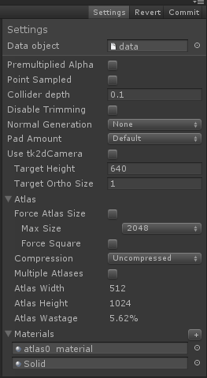

Documentation
Script Reference
Forum
Documentation
Script Reference
Forum
2D Toolkit is an efficient and fast 2D sprite and text system developed by Unikron Software. The primary focus of the product is on mobile performance and workflow efficiency - and has heaps of features geared towards this.
In this tutorial we'll introduce the new Sprite Collection Editor interface introduced in version 1.60, and extended greatly in 1.70 - and then go through some of the optimization features provided by 2D Toolkit.
Once you download 2D Toolkit from the Asset Store and import it into your project, you should be ready to go. You can upgrade directly from the Asset Store - if you're using JavaScript, follow the steps below to get everything going again!
2D Toolkit is distributed as a full source package, and we'd like to keep it that way - its great being able to dissect the source code, and customize it to your needs. There is a minor inconvenience if you're using JavaScript - you will need to run to run the "Setup for JavaScript" menu command under the "2D Toolkit" menu. This will move the script files to the correct directory structure to be accessible from JavaScript.
If you're upgrading from a previous version - Make sure you restart Unity after importing the latest package, and run the "Setup for JavaScript" command once Unity has restarted.
A sprite collection is simply what the name says on the can - a collection of sprites. These sprites are run through a sequence of processes by 2D Toolkit and finally packed into one or more atlases and geometry cached for them. Sprite geometry doesn't necessarily have to be square, which lets us do very interesting optimizations, some of which we will cover below.
First, we'll start by creating a directory to host the sprite collection. This isn't necessary, but its good practice. Select the directory, and click on Project Window > Create > tk2d > Sprite Collection.
Once you have created the Sprite Collection, it is important to name it so you'll be able to quickly select it later. We called ours "Tutorial Sprites". Click on "Open Editor…" in the inspector to bring up the Sprite Collection Editor window.
It's a good idea to dock this window so you will be able to drag textures into it. What we will do now is drag a few textures as shown below. The sprites we are using are from /Assets/TK2DROOT/tk2d_demo/demospritecollection/sprites, which you should have if you imported the full package. Simply shift select all the textures you'd like to import and drag them to the "Drop sprites here" box as shown below.
The newly dropped textures will automatically be selected in the Sprite Collection editor. You can now perform batch changes to any of the parameters you see in the inspector panel to the right.
Once you are happy with your sprite collection, click on Commit to save and create the atlases. If you used the same textures we did, you'll be presented with the following message - "Unable to fit textures in requested atlas area".
The default atlas size is 1024, so we'll increase this to 2048 temporarily to allow the textures to fit. Click on "Settings" and change "Max Atlas Size" to 2048, and click Commit again. You should see that the created atlas is 1024x2048 (10.7 MB), and there is 76.94% wasted space in it! This clearly isn't a good use of texture space so we'll try to fix this.
Click on atlas0_material in the materials foldout to locate it in the Project window, and then click on atlas0 in the same folder to view the texture. We've spotted the problem. There is one rather huge texture in the atlas.
Turns out this texture is used as a background texture, and has quite a bit of empty space (0 alpha transparent regions) in it and as such is a perfect candidate for Sprite Dicing.
Sprite dicing is a feature unique to 2D Toolkit which allows the system to split up a large texture into much smaller chunks, individually trimming these chunks, and seamlessly reconstructing the sprite in the viewport.
Select bg1 in the Sprite Collection Editor. Tick Dice in the inspector for this texture. The 2 parameters below are the chunk sizes to split the original texture into. Click on Commit with these default values, and look at the atlas texture again. It has now been reduced to 512x1024 (2.7MB), which is significantly smaller than the original texture. You can experiment with the 2 dice parameters to see what produces the best results.
Sprite dicing not only saves atlas space, but also fillrate and is a useful optimization on mobile platforms.
The sprite collection has been created by default to display pixel perfect on a 960x640 display, with an orthographic camera with a size of 1. This is set up in the Settings overlay in the Sprite Collection editor, and you may change them if you're targeting a different resolution.
In this tutorial, however, we'll simply use the defaults and set up a camera to match this.
The background sprite we diced in the previous step should appear in the viewport. Zooming in closer shows what 2D Toolkit has done to optimize this sprite. (Image contrast increased to highlight polygons). The sprite has been broken down into smaller chunks, and the empty (0 alpha) space removed.
This is an incredibly powerful optimization - but 2D Toolkit 1.70 introduces another feature which lets you take this further.
Sprite dicing solves one set of problems, and is limited to shapes where the sprites can be reliably diced along the x and y axes. In some cases (hex and isometric tilesets), it may not work as well. Lets see what we can do to optimize the following sprite - its called "starspike" and should be in your sprite collection if you've followed the steps so far.
Select it in the Sprite Collection Editor, and now, tick "Custom Shape". You should see a green outline around the sprite. Hint - you can use the mousewheel / two finger swipe gesture to zoom in to the sprite preview area.
What we can do now is modify this geometry to tightly fit the sprite.
Click commit, create the sprite in the scene view. You'll find that it looks like this (triangle edges enhanced) -
While this approach hasn't saved any texture space, it has saved tremendous amounts of fillrate - always a good thing on mobile platforms.
Using custom sprite shapes also allows you to make sprites "solid" instead of semitransparent. This can be an important optimization for tilemaps. Consider the following annotated screenshot. The tilemap editor seamlessly works with these sprite collections and creates splits in meshes where necessary for transparent materials and opaque materials. That brings us to the last topic in this tutorial.
When working with tilemaps mainly, and in other scenarios too, it may be beneficial to make some sprites solid where possible. Material overrides let you do just that - it lets you share the same atlas, but use different materials for some of the sprites.
You can create a material override by clicking on the "+" button next to the Materials dropdown. This creates a duplicate of the current material, which you can then edit and reconfigure as you see fit. You will then be able to override individual or multi-selected sprites to use this material.

We've covered some of the powerful optimization opportunities in 2D Toolkit. This isn't all though - 2D Toolkit provides tons more features which makes it easy and efficient to make your game with.